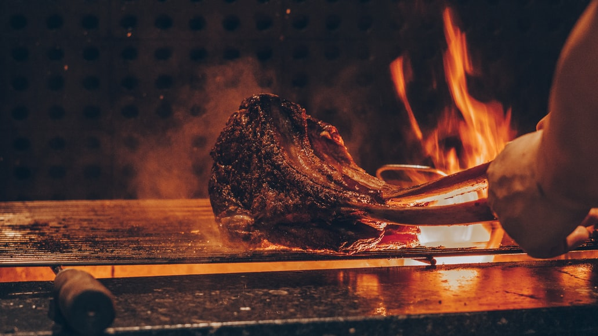

Dry Rub Short Ribs

Delicious dry rub bbq ribs
prep for 15 minutes then let the ribs cook for an hour, then anoth 35 mins
Ingredients
- 1 tablespoon packed brown sugar
- 1 tablespoon paprika
- 1 tablespoon chili powder
- 1 teaspoon salt
- 1 teaspoon garlic powder
- 4 pounds beef short ribs (bone-in), trimmed of fat
- Ice cubes
- ½ cup barbecue sauce, plus additional for serving
- Reynolds Wrap® Heavy Duty Aluminum Foil
Steps
- Mix the sugar, paprika, chili powder, salt, and garlic powder in a medium bowl. Rub all surfaces of meat generously with the dry mixture. Place ribs in the prepared dish in a single layer. Cover and chill the ribs in the refrigerator 30 minutes to 1 hour.
- Preheat grill to medium indirect heat. Center one-fourth of the ribs and two ice cubes on a sheet (12x18 inches) of Reynolds Wrap® Heavy Duty Aluminum Foil. Bring up foil sides. Double-fold top and ends to seal packet, leaving room for heat circulation inside. Repeat to make four packets.
- Grill packets on a grill rack over medium (375 degrees F to 400 degrees F) indirect heat in covered grill 1 1/2 to 2 hours or until tender.
- Open packets carefully by cutting along top folds with a sharp knife, allowing steam to escape.; then open top of foil packet. Brush ribs with 1/2 cup barbecue sauce. Continue grilling over direct medium heat, covered, 5 minutes more until browned and crisp, turning once.
- Serve with additional barbecue sauce as desired.
click here to return home